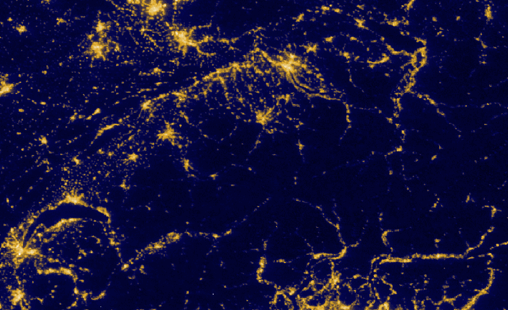
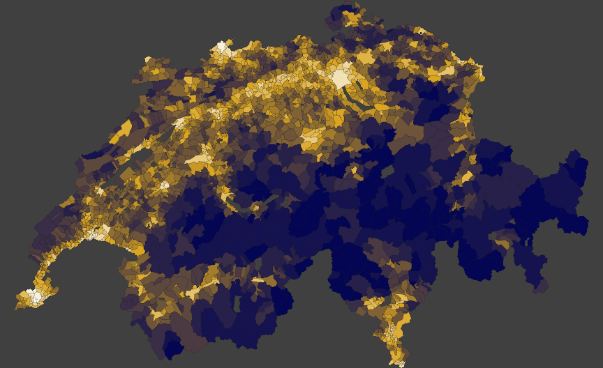

Fast raster extraction and manipulation in R
velox is an R package for performing fast extraction and manipulation operations on geospatial raster data. velox is fast because:
- All raster operations are performed in C++.
- Geometric operations are implemented with the Boost Geometry libraries.
- All data is held in memory.
velox is fully interoperable with the raster, sp, and sf packages.


Optimized for speed
 
Aggregating September 2017 nightlight emissions for 2268 Swiss communes takes 0.84 seconds in velox and 54.76 seconds in raster.
Features
velox currently offers the following features:
- Raster value extraction given polygons, lines, or points
- Focal value calculation (i.e. moving window filters)
- Rasterization of polygons or lines
- Raster aggregation
- Cropping
- Image patch flattening and reconstruction